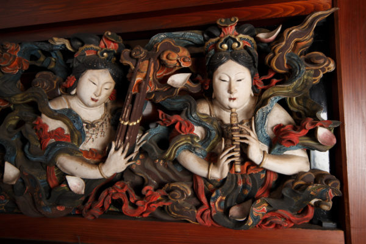
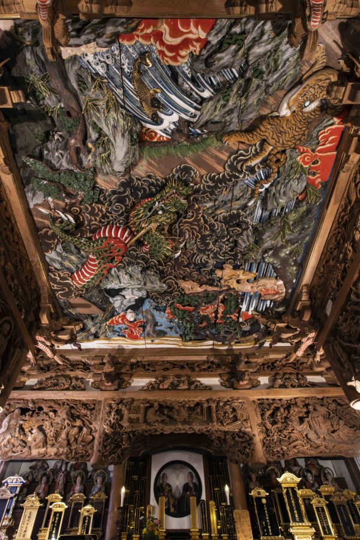
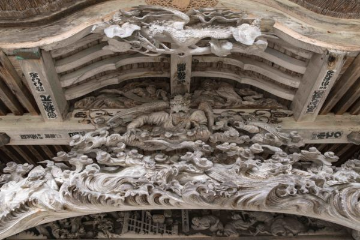
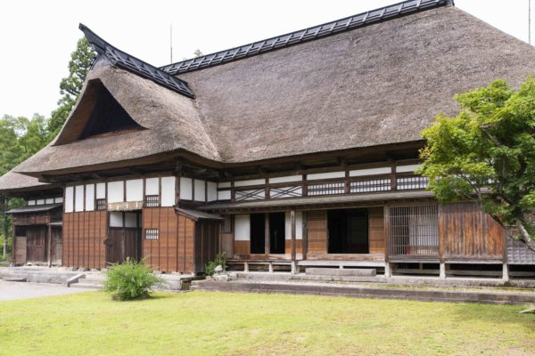
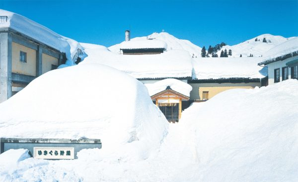
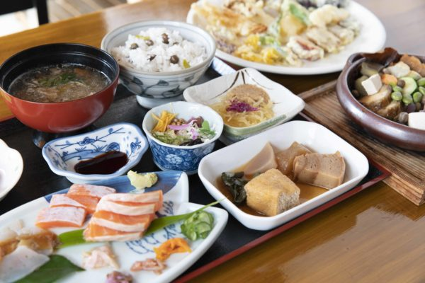
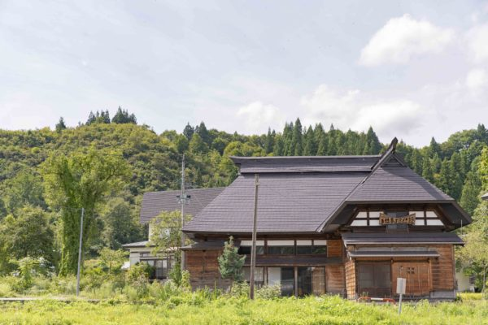
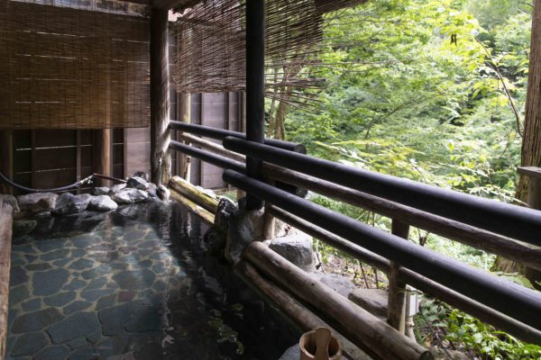
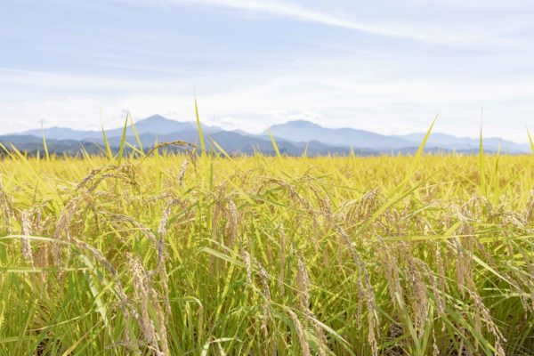

Префектура Ниигата · Уонума · искусство
Унсё Исикава, «японский Микеланджело»: резные чудеса в храмах Уонумы

В Этиго, одном из главных рисовых краёв Японии, жил мастер, которого называют «японским Микеланджело». Унсё Исикава резал дерево и камень и так же уверенно писал картины, а особенно много его крупных работ осталось в городе Уонума.
Мастер
«Демон резьбы» из Эдо
Любил сакэ, женщин и азартные игры. Так говорят об Унсё Исикаве, но стоило ему взять в руки стамеску, как гуляка превращался в «демона резьбы». Он родился в 1814 году в Эдо, в районе Дзосигая, поступил в школу резчиков Исикава, работавшую в стиле эдо-бори, и уже в двадцать с небольшим прославился как мастер резных украшений. Умер Унсё в 1883 году, и почти вся его зрелая жизнь прошла в Этиго, старом названии нынешней Ниигаты.
В Этиго он перебрался примерно в 30 лет, и всё решила одна встреча. Купец из Сандзё, города, который и сегодня славится металлическими изделиями, торговал инструментом и однажды приехал в Эдо.
«На блошином рынке купец заметил человека, который не отрываясь разглядывал стамески. Взгляд у него был такой острый, что купец тут же предложил: хорошее сакэ и стамески до конца жизни. Унсё согласился»
заместитель настоятеля храма Эйрин-дзи
Эйрин-дзи
Работа, проигранная в кости
Работ Унсё много по всей префектуре Ниигата, но самые крупные остались в Уонуме. В храм Эйрин-дзи школы Сото его позвали как плотника для храмовых построек, и история его приезда вполне в духе игрока.
«Тогдашний настоятель предложил пари. Выиграет Унсё, и храм заплатит ему за работу. Выиграет настоятель, и мастер бесплатно украсит весь главный зал резьбой, вложив в неё всю душу. Говорят, Унсё, который больше всего на свете любил работу, проиграл нарочно»
заместитель настоятеля храма Эйрин-дзи
Неудачную резьбу Унсё без сожаления выбрасывал. Мастер не терпел компромиссов, а в Эйрин-дзи насчитывается около сотни его работ. Небесная дева на ранма, резной панели над проёмом с западной стороны главного зала, вырезана по канону красоты Эдо: узкие глаза, высокий нос, щёки цвета сакуры. Моделью, по преданию, была женщина из Уонумы, в которую Унсё был влюблён.
Храм Эйрин-дзи
- Адрес
- префектура Ниигата, Уонума, Нэгоя, 1765
- Сайт
- eirinji.jp
Сайфуку-дзи
Утешение для снежной деревни

Догэн (1200–1253), герой потолочной резьбы, был основателем школы Сото, одной из главных ветвей японского дзэн-буддизма. Зал основателя храма Сайфуку-дзи заказал Унсё тогдашний настоятель храма.
«Настоятель хотел, чтобы зал стал опорой для людей бедной деревни, которую каждую зиму заносит снегом. Поэтому он поручил Унсё и резьбу, и росписи»
заместитель настоятеля храма Сайфуку-дзи
Мастер ответил на этот замысел всем своим умением. Над входом в зал летят тэнгу-вороны с глазами из стекла и фениксы. На неокрашенной резьбе особенно хорошо видно, как Унсё работал с рисунком дерева.

Унсё резал не только дерево, но и камень, и писал картины. В Сайфуку-дзи сохранилось много его росписей на раздвижных перегородках фусума и сёдзи, и по ним видно, насколько разносторонним он был. За это его и называют «японским Микеланджело». Здесь стоит не торопиться и рассмотреть, как работали его стамеска и кисть.
Возвести зал основателя помогло пожертвование богатого старосты, по положению равного хозяевам усадьбы Мэгуро, о которой ниже.
Храм Сайфуку-дзи
- Адрес
- префектура Ниигата, Уонума, Оура, 174
- Сайт
- saifukuji-k.com
Где ещё
По Уонуме после Унсё
После храмов стоит заехать в усадьбу Мэгуро, где сохранился быт богатой крестьянской семьи эпохи Эдо. Дом построили в 1797 году, и он служил ещё и конторой старшего старосты, управлявшего несколькими деревнями. Главный дом имеет размеры 16 на 6 кэн (кэн около 1,8 м), а над входом возвышается торжественный треугольный фронтон тидори-хафу.

Усадьба Мэгуро
- Адрес
- префектура Ниигата, Уонума, Сухара, 892
Унсё любил выпить, и Уонума ему в этом не мешала: это край сакэ. Снежный покров здесь обычно превышает три метра, и его давно научились использовать. Для сакэ «Этиго юкикура» зимой сгребают снег в огромную гору и устраивают внутри естественный холодильник, где напиток созревает. Сакэварню «Тамагава сюдзо» можно осмотреть в «Этиго юкикура-кан».

«Тамагава сюдзо», «Этиго юкикура-кан»
- Адрес
- префектура Ниигата, Уонума, Сухара, 1643
- Сайт
- yukikura.com
Еда и ночлег
Деревенская кухня, старый дом и долгое купание
В небольшой столовой «Ирори дзинэн», устроенной в бывшем жилом доме, готовят деревенскую еду из того, что даёт Уонума в свой сезон: съедобных полевых цветов, собранных трав и горной зелени сансай. Хозяин работает так тщательно, что простые продукты становятся праздничным угощением.

«Ирори дзинэн»
- Адрес
- префектура Ниигата, Уонума, Ками-Оритатэ, 718
«Тэсигото тэходоки-кан» занимает крестьянский дом старше ста лет, последний такой в округе, и принимает одну группу гостей в день. Живя здесь, можно попробовать деревенскую жизнь: выращивать рис, ходить в горы, плавать на каноэ в местечке Гинзандайра, собирать кленовый сироп или делать бомбочки для ванны.

«Тэсигото тэходоки-кан»
- Адрес
- префектура Ниигата, Уонума, Оототияма, 183
Рёкан «Дзидзайкан» на онсэне Тотиомата принимает тех, кто приезжает на тодзи, лечебные купания, уже 400 лет. Вода здесь радоновая, и считается, что она помогает от всех болезней. В воде температурой 36 °C главное сидеть долго и никуда не спешить: некоторые опытные гости проводят в купальне по десять часов в день.

Рёкан «Дзидзайкан»
- Адрес
- префектура Ниигата, Уонума, онсэн Тотиомата
- Сайт
- jizaikan.jp
Сезон
Осень в краю риса

В снежных краях горную зелень собирают долго, с весны до лета: снег тает не сразу, а понемногу, и сансай пробиваются один за другим. Летом здесь ловят речную рыбу, осенью собирают грибы.
Осенью в Уонуме можно и попробовать рис косихикари, и посидеть в онсэне, и пройти по следам Унсё Исикавы от одного храма к другому.
Фото: Кадзуя Хаяси.